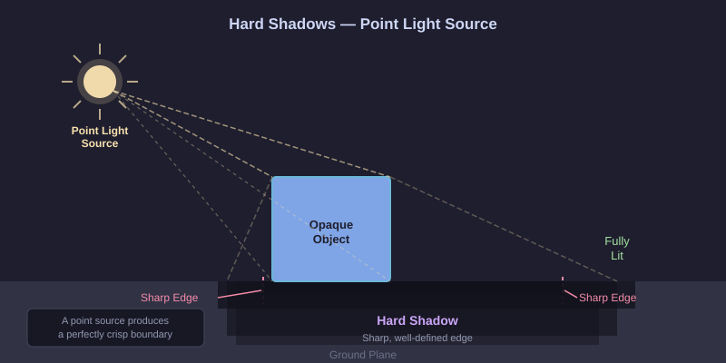
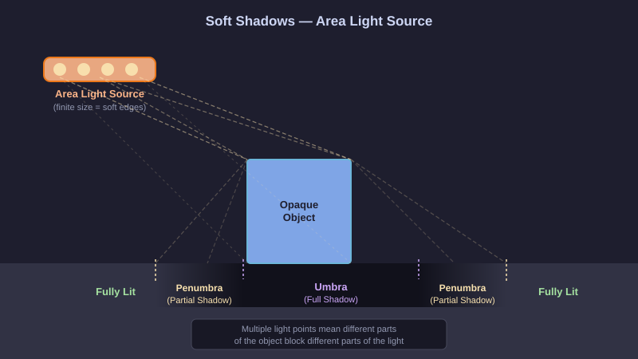
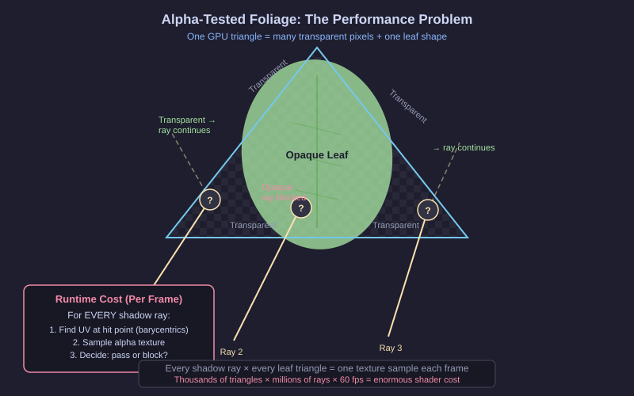

Shadows, Light, and the Trouble with Leaves
The Geometry of Darkness
A shadow is absence. It is what remains when something stands between a surface and a source of light. Yet that absence carries enormous perceptual weight — shadows tell us about shape, about time of day, about depth, about the relationship between objects in a scene. Long before any algorithm was involved, painters spent centuries learning to render shadows convincingly, because the human visual system is exquisitely sensitive to them.
The simplest shadow to reason about is the hard shadow — the kind you see indoors on a bright, sunny day when a window casts a perfectly sharp rectangle of light onto the floor. This sharpness arises from geometry. An ideal point source of light illuminates every surface it can see and leaves everything else in total darkness. There is no ambiguity at the boundary. A surface point either has a line of sight to the light source or it does not. The shadow’s edge is a mathematical curve — the projection of the occluder’s silhouette as seen from the light.

In a ray-traced shadow system, computing this is conceptually clean. We cast a ray from the surface point toward the light. If that ray intersects any piece of geometry before reaching the light, the point is in shadow. If it reaches the light unobstructed, the point is illuminated. The shadow is crisp because we fire exactly one ray per pixel and the answer is binary.
The Softness of Real Light
Nature does not provide point light sources. The sun, for all its distance, subtends a small but non-zero angle in the sky — roughly half a degree of arc, which makes it effectively a disk. Interior lighting uses area lights: tubes, panels, spheres, and diffusers. Even a candle flame has physical extent.
When the light source has area, the geometry of shadow becomes more interesting. Consider a surface point looking toward the sun. If the occluder (say, the edge of a roof overhang) blocks the entire solar disk from view, the point is in the umbra — fully in shadow, receiving no direct sunlight at all. If the occluder blocks only part of the solar disk, the point is in the penumbra — it receives some direct sunlight, from the unobstructed fraction of the disk, but not all. The ratio of blocked to unblocked disk area determines how bright the point appears.

The penumbra is that beautiful gradient at a shadow’s edge — the blurry transition from full shadow to full light. It is so familiar from everyday experience that its absence in rendered images immediately reads as artificial. Our eyes have learned to expect soft edges. When we see a perfectly hard shadow edge from a large, bright light source, something feels wrong even if we cannot articulate why.
In our engine, soft shadows are approximated by casting multiple shadow rays per pixel, sampling different points on the light source’s surface, and averaging the results. Each ray gives a binary answer (blocked or not), and the average produces a smooth gradient. The quality of the soft shadow improves with the number of samples, and the performance cost scales accordingly.
Enter the Tree
Now consider a scene with a tree. Not a stylized, cartoon tree — a realistic tree with thousands of leaves. The artist who created this tree did not model each leaf as a three-dimensional solid with thickness and geometry on every face. That would require an unmanageable number of polygons. Instead, they used a technique that has been standard in games and visualization for decades: every cluster of leaves is represented by a small number of large, flat triangles, each carrying a texture that shows the detailed leaf shape.
This texture has two components: the color of the leaves (green, with vein patterns and light-scattering subtlety) and the alpha channel — a mask that defines exactly which pixels of the texture rectangle are "leaf" and which are "sky." The alpha value is 1.0 where the leaf exists and 0.0 where it does not, with a narrow gradient at the edge to avoid harsh pixel-level aliasing.
From a distance, this works beautifully. The triangles are nearly invisible; you see only the leaf shapes defined by the alpha. The silhouette looks organic and complex even though the underlying geometry is a sparse collection of flat quadrilaterals. This is alpha-masked geometry, and it is ubiquitous in real-time content: trees, bushes, grass, chain-link fences, wrought iron railings, curtains, particle sprites, and more.
When a Shadow Ray Meets a Leaf
Here is where the trouble begins. When a shadow ray travels through the scene and encounters the tree, the BVH traversal engine identifies candidate triangles whose bounding boxes the ray intersects. For a solid wall, this is the end of the story: the ray hits the triangle, the hit is committed, the surface point is in shadow. Done.
For a leaf triangle, the story is not over. The triangle is there, geometrically speaking — the ray has intersected the flat rectangle. But is the intersection point actually on a leaf, or is it in the transparent gap between leaves? The GPU cannot know by looking at the triangle alone. It must look up the alpha texture at the specific UV coordinates corresponding to the ray’s intersection point. Only after that lookup can it decide whether to commit the hit (the point is on a solid leaf) or ignore it (the point is in transparent space, and the ray keeps traveling).
This lookup is performed by the any-hit shader — a small programmable shader that fires for every candidate hit when the geometry is marked as alpha-tested. And crucially, the ray does not stop at the first candidate. A ray traveling through the canopy of a tree may pass through dozens of leaf triangles. Each one fires the any-hit shader. Each one requires a texture sample. Each one delays the traversal.
The Scale of the Problem
To make this visceral: imagine you are trying to determine whether your hand is in the shade of a tree. But instead of the tree being a solid, opaque object, every single leaf is made of Swiss cheese — and the holes in the cheese are not filled with anything, just empty. To know whether a particular hole blocks the light from reaching your hand, you have to physically pick up that leaf, hold it up, and look through it to see if the hole aligns with the light source. Then pick up the next leaf. Then the next. For a full tree, rendered at 4K resolution, with 16 soft-shadow sample rays per pixel, refreshed sixty times a second — the number of "cheese inspections" runs into the billions per second.

Every one of those inspections requires shader execution, texture sampling, and a decision. Most of the time, the answer is "transparent, keep going." But the cost of asking the question is paid regardless.
A Better Question
This is the moment to ask a better question. We know, at scene load time, exactly what the leaf textures look like. We know which parts of each triangle are opaque and which are transparent. That information does not change between frames — the leaves are not animated at the texel level. So why are we discovering it again on every shadow ray, on every frame?
What if we could tell the hardware, once, at load time, which parts of each triangle are definitely solid and which are definitely empty? What if the GPU could consult that pre-baked knowledge during traversal and only run the expensive shader for the genuinely ambiguous edge regions? That is exactly the promise of Opacity Micromaps.